Remote development over SSH
This tutorial walks you through creating and connecting to a virtual machine (VM) on Azure using the Visual Studio Code Remote - SSH extension. You'll create a Node.js Express web app to show how you can edit and debug on a remote machine with VS Code just like you could if the source code was local.
Note: Your Linux VM can be hosted anywhere - on your local host, on premise, in Azure, or in any other cloud, as long as the chosen Linux distribution meets these prerequisites.
Prerequisites
To get started, you need to have done the following steps:
- Install an OpenSSH compatible SSH client (PuTTY is not supported).
- Install Visual Studio Code.
- Have an Azure subscription (If you don't have an Azure subscription, create a free account before you begin).
Install the extension
The Remote - SSH extension is used to connect to SSH hosts.

Remote - SSH
With the Remote - SSH extension installed, you will see a new Status bar item at the far left.

The Remote Status bar item can quickly show you in which context VS Code is running (local or remote) and clicking on the item will bring up the Remote - SSH commands.
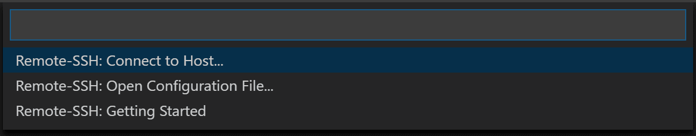
Create a virtual machine
If you don't have an existing Linux virtual machine, you can create a new VM through the Azure portal. In the Azure portal, search for "Virtual Machines", and choose Add. From there, you can select your Azure subscription and create a new resource group, if you don't already have one.
Note: In this tutorial, we are using Azure, but your Linux VM can be hosted anywhere, as long as the Linux distribution meets these prerequisites.
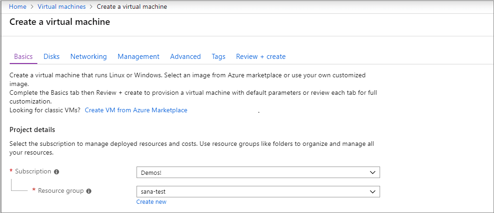
Now you can specify details of your VM, such as the name, the size, and the base image. Choose Ubuntu Server 18.04 LTS for this example, but you can choose recent versions of other Linux distros and look at VS Code's supported SSH servers.
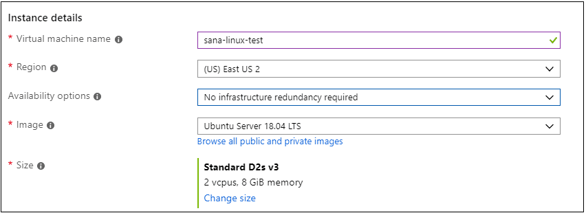
Set up SSH
There are several authentication methods into a VM, including an SSH public/private key pair or a username and password. We recommend using key-based authentication (if you use a username/password, you'll be prompted to enter your credentials more than once by the extension). If you're on Windows and have already created keys using PuttyGen, you can reuse them.
Create an SSH key
If you don't have an SSH key pair, open a bash shell or the command line and type in:
ssh-keygen -t ed25519
This will generate the SSH key. Press Enter at the following prompt to save the key in the default location (under your user directory as a folder named .ssh).
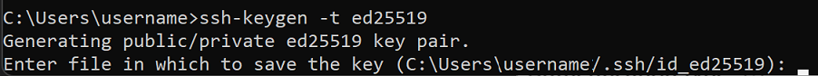
You will then be prompted to enter a secure passphrase, but you can leave that blank. You should now have a id_ed25519.pub file which contains your new public SSH key.
Note: If you are using a legacy system that doesn't support the Ed25519 algorithm, you can use rsa instead:
ssh-keygen -t rsa -b 4096.
Add SSH key to your VM
In the previous step, you generated an SSH key pair. Select Use existing public key in the dropdown for SSH public key source so that you can use the public key you just generated. Take the public key and paste it into your VM setup, by copying the entire contents of the id_ed25519.pub in the SSH public key. You also want to allow your VM to accept inbound SSH traffic by selecting Allow selected ports and choosing SSH (22) from the Select inbound ports dropdown list.
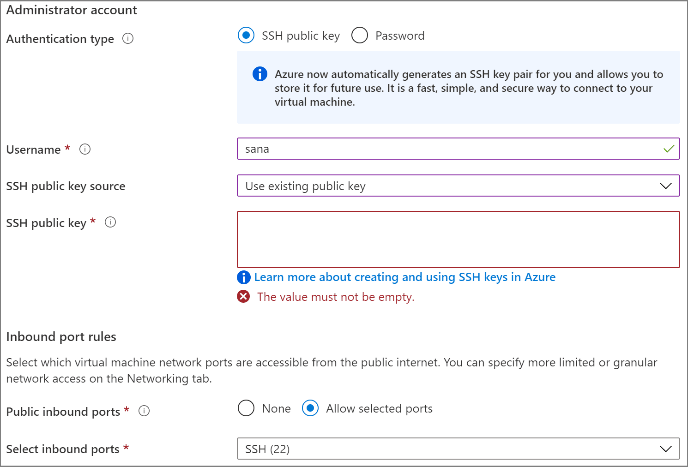
Auto shutdown
A cool feature of using Azure VMs is the ability to enable auto shutdown (because let's face it, we all forget to turn off our VMs…). If you go to the Management tab, you can set the time you want to shut down the VM daily.
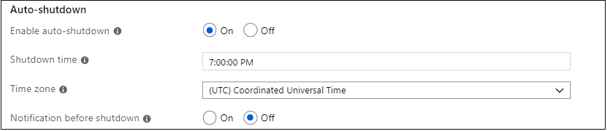
Select Review and Create, then Create, and Azure will deploy your VM for you!
Once the deployment is finished (it may take several minutes), go to the new resource view for your virtual machine.
Connect using SSH
Now that you've created an SSH host, let's connect to it!
You'll have noticed an indicator on the bottom-left corner of the Status bar. This indicator tells you in which context VS Code is running (local or remote). Click on the indicator to bring up a list of Remote extension commands.
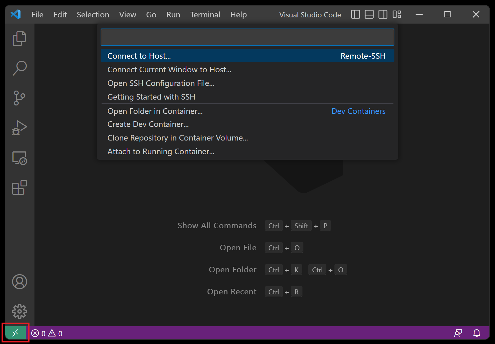
Choose the Connect to Host... command in the Remote-SSH section and connect to the host by entering connection information for your VM in the following format: user@hostname.
The user is the username you set when adding the SSH public key to your VM. For the hostname, go back to the Azure portal and in the Overview pane of the VM you created, copy the Public IP address.
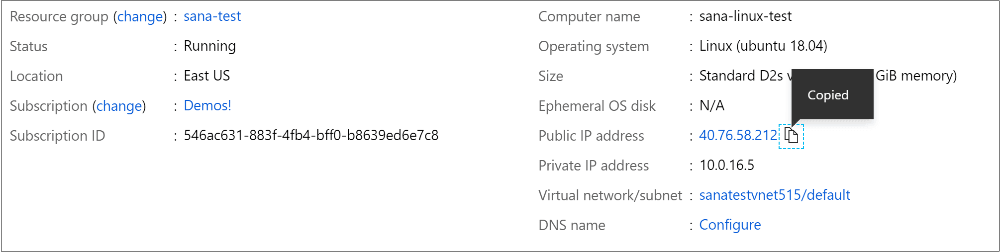
Before connecting in Remote - SSH, you can verify you're able to connect to your VM via a command prompt using ssh user@hostname.
Note: If you run into an error
ssh: connect to host <host ip> port 22: Connection timed out, you may need to delete NRMS-Rule-106 from the Networking tab of your VM:
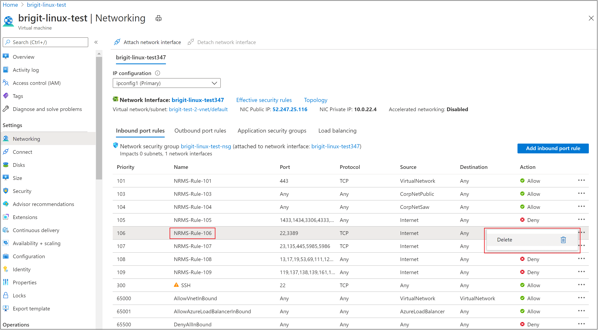
Set the user and hostname in the connection information text box.
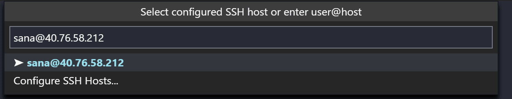
VS Code will now open a new window (instance). You'll then see a notification that the "VS Code Server" is initializing on the SSH Host. Once the VS Code Server is installed on the remote host, it can run extensions and talk to your local instance of VS Code.
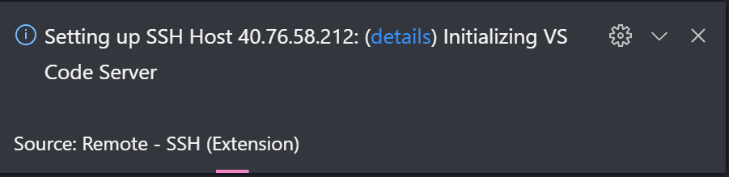
You'll know you're connected to your VM by looking at the indicator in the Status bar. It shows the hostname of your VM.
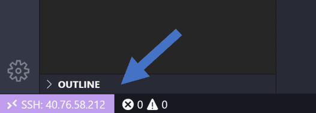
The Remote - SSH extension also contributes a new icon on your Activity bar, and clicking on it will open the Remote explorer. From the dropdown, select SSH Targets, where you can configure your SSH connections. For instance, you can save the hosts you connect to the most and access them from here instead of entering the user and hostname.
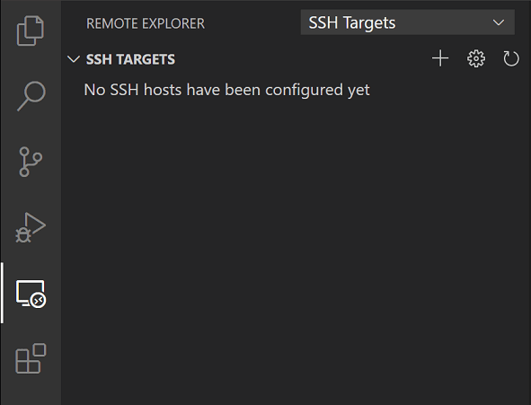
Once you're connected to your SSH host, you can interact with files and open folders on the remote machine. If you open the integrated terminal (⌃` (Windows, Linux Ctrl+`)), you'll see you're working inside a bash shell while you're on Windows.
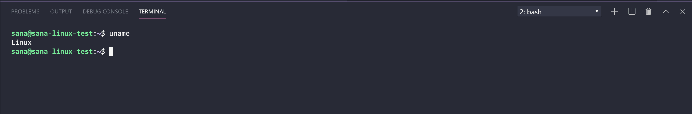
You can use the bash shell to browse the file system on the VM. You can also browse and open folders on the remote home directory with File > Open Folder.
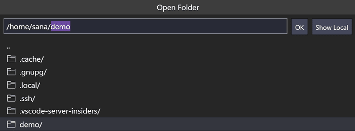
Create your Node.js application
In this step, you will create a simple Node.js application. You will use an application generator to quickly scaffold out the application from a terminal.
Install Node.js and npm
From the integrated terminal (⌃` (Windows, Linux Ctrl+`)), update the packages in your Linux VM, then install Node.js, which includes npm, the Node.js package manager.
sudo apt-get update
curl -sL https://deb.nodesource.com/setup_lts.x | sudo -E bash -
sudo apt-get install -y nodejs
You can verify the installations by running:
node --version
npm --version
Install the Express generator
Express is a popular framework for building and running Node.js applications. You can scaffold (create) a new Express application using the Express Generator tool. The Express Generator is shipped as an npm module and installed by using the npm command-line tool npm.
sudo npm install -g express-generator
The -g switch installs the Express Generator globally on your machine so that you can run it from anywhere.
Create a new application
You can now create a new Express application called myExpressApp by running:
express myExpressApp --view pug
The --view pug parameters tell the generator to use the pug template engine.
To install all of the application's dependencies, go to the new folder and run npm install.
cd myExpressApp
npm install
Run the application
Last, let's ensure that the application runs. From the terminal, start the application using the npm start command to start the server.
npm start
The Express app by default runs on http://localhost:3000. You won't see anything in your local browser on localhost:3000 because the web app is running on your virtual machine.
Port forwarding
To be able to browse to the web app on your local machine, you can leverage another feature called Port forwarding.
To be able to access a port on the remote machine that may not be publicly exposed, you need to establish a connection or a tunnel between a port on your local machine and the server. With the app still running, open the SSH Explorer and find the Forwarded Ports view. Click on the Forward a port link and indicate that you want to forward port 3000:
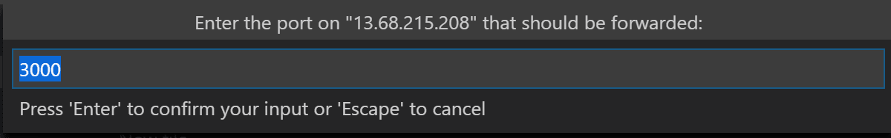
Name the connection "browser":
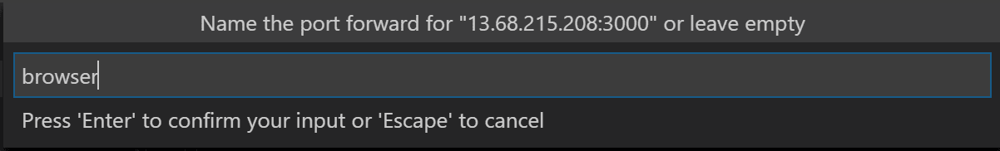
The server will now forward traffic on port 3000 to your local machine. When you browse to http://localhost:3000, you see the running web app.
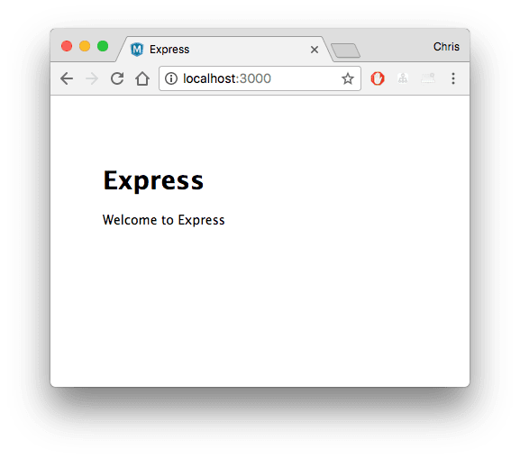
Edit and debug
From the Visual Studio Code File Explorer (⇧⌘E (Windows, Linux Ctrl+Shift+E)), navigate to your new myExpressApp folder and double-click the app.js file to open it in the editor.
IntelliSense
You have syntax highlighting for the JavaScript file as well as IntelliSense with hovers, just like you would see if the source code was on your local machine.
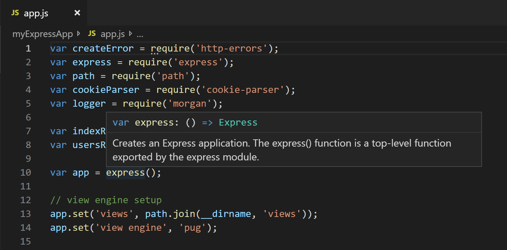
When you start typing, you'll get smart completions for the object methods and properties.
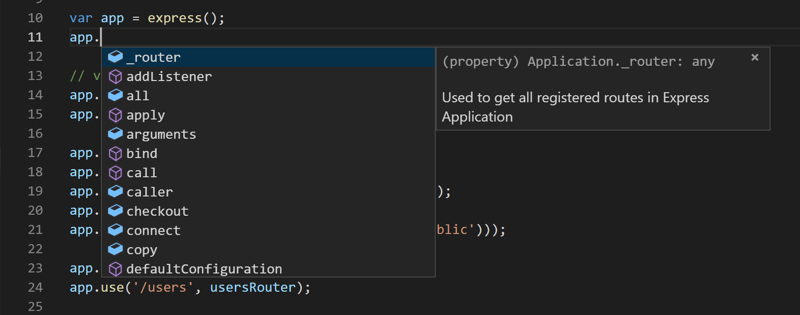
Debugging
Set a breakpoint on line 10 of app.js by clicking in the gutter to the left of the line number or by putting the cursor on the line and pressing F9. The breakpoint will be displayed as a red circle.
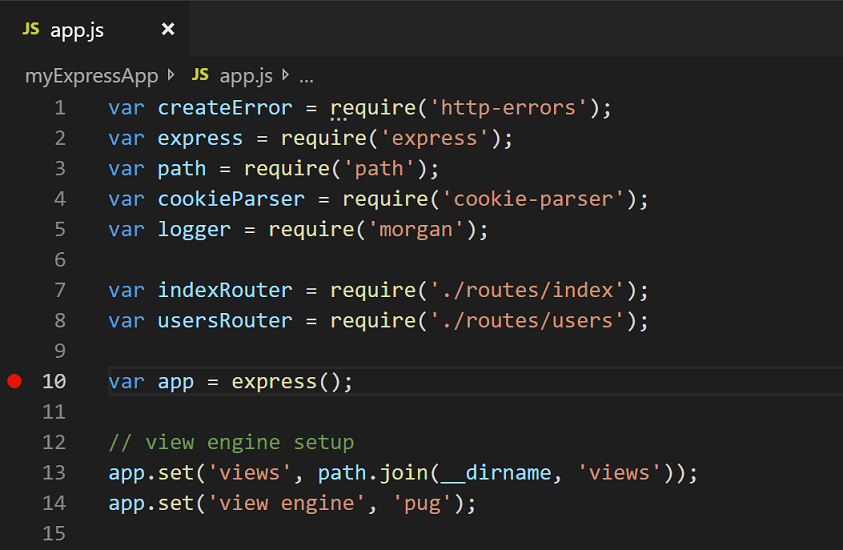
Now, press F5 to run your application. If you are asked how to run the application, choose Node.js.
The app will start, and you'll hit the breakpoint. You can inspect variables, create watches, and navigate the call stack.
Press F10 to step or F5 again to finish your debugging session.
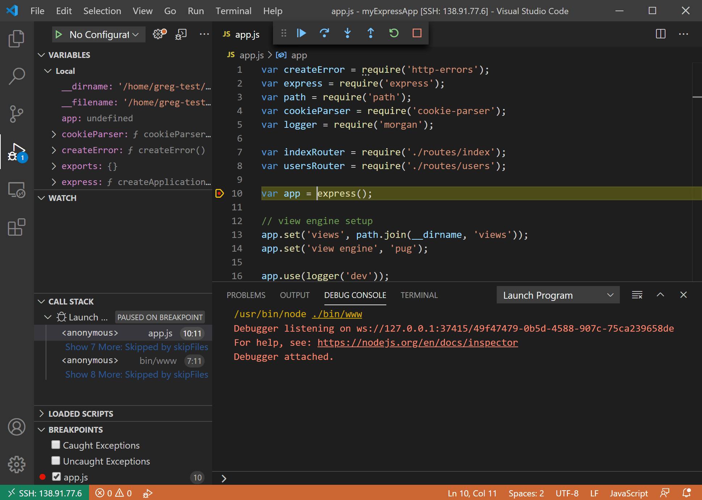
You get the full development experience of Visual Studio Code connected over SSH.
Ending your SSH connection
You can end your session over SSH and go back to running VS Code locally with File > Close Remote Connection.
Congratulations
Congratulations, you've successfully completed this tutorial!
Next, check out the other Remote Development extensions.
Or get them all by installing the Remote Development Extension Pack.